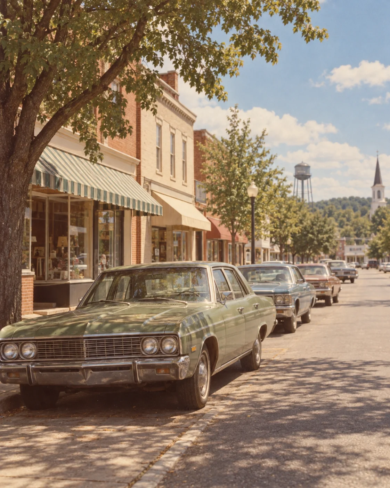
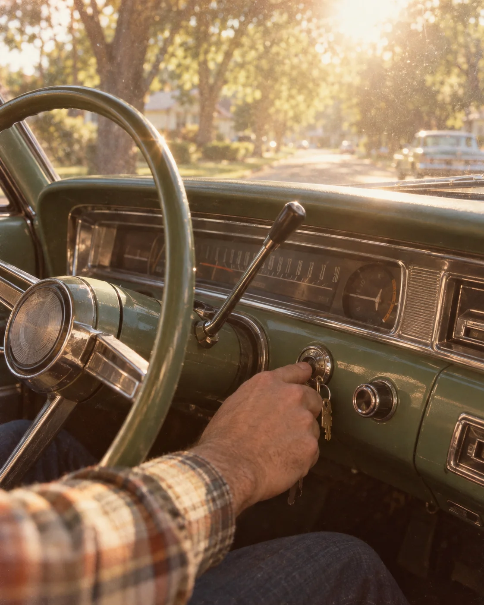
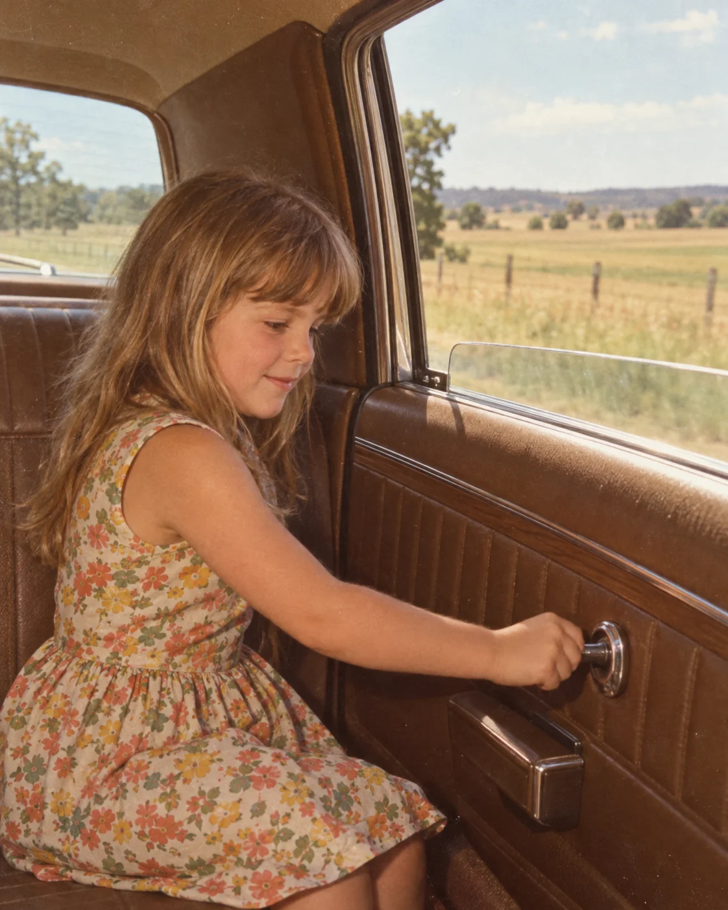
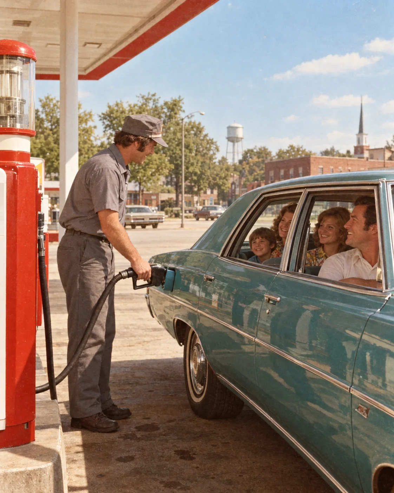
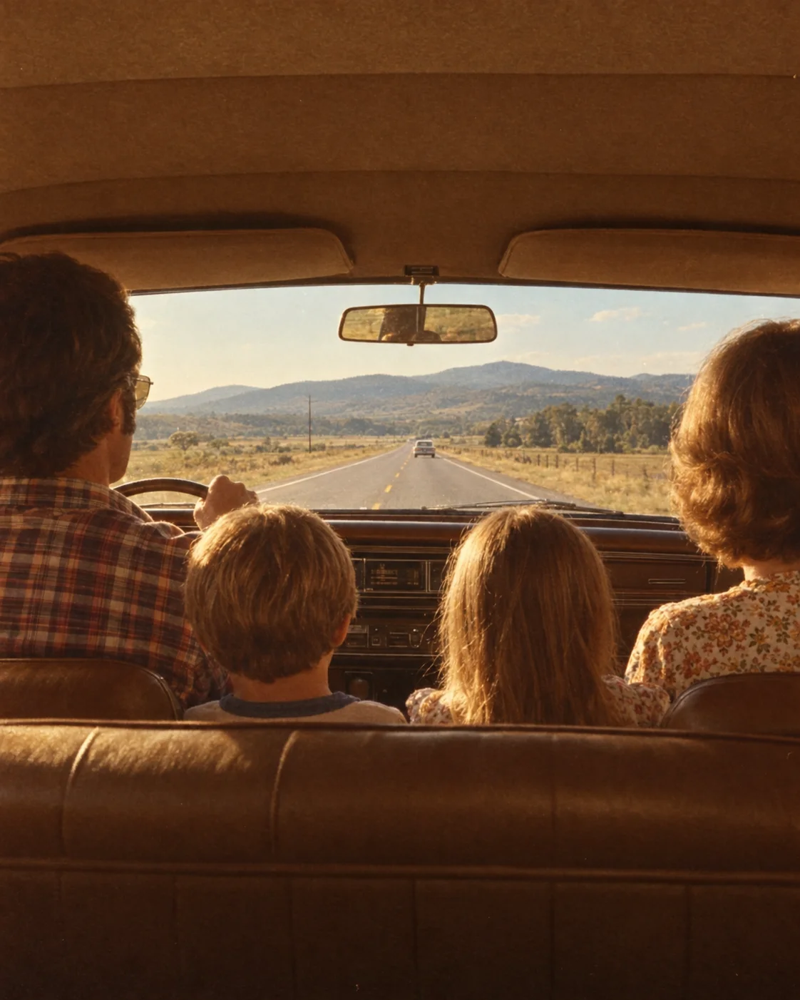
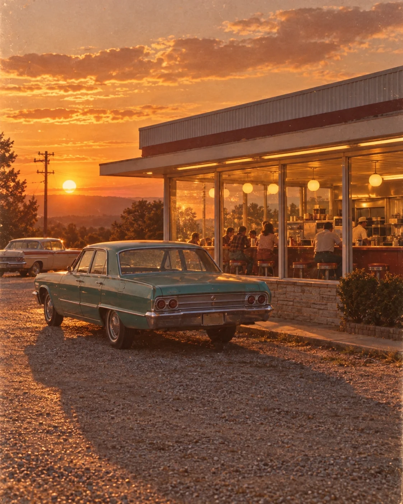

The Cars Everyone Wanted: Mustang, Beetle, Impala and the Rest
Chrome, vinyl roofs and a tank of leaded gas. Which one was parked in front of your house?
AI-created period illustration
Read the storyON THE ROAD - 1960s-70s
A key you could feel. Windows you rolled down. A stop for gas that came with a chat. What car takes you back?
Cars used to look like somebody. You could name them from a block away, by the shape of the headlights or the line of the chrome, the way you can still name a face in a crowd.
They felt like somebody too. Everything in them moved with a little weight and a little sound, and driving one was something you did with your hands, not just your eyes.


The key was a piece of metal with teeth, and it had a job you could feel. It went in with a push, turned with a small effort, and the whole car answered at once: the click, the crank, the engine catching.
Most cars came with two of them, one for the doors and ignition, one for the trunk. You knew which was which by touch, in the dark, without looking.
There was no button, no beep, no little light show on the dashboard. Just the key, the wheel, and you.

Air conditioning was a handle. You grabbed the little chrome crank and turned, and the window went down as fast as your arm could manage, which was never as fast as a July afternoon asked for.
Every family had its system. Windows down in town, windows up on the highway, and the little triangle vent window swung out to aim the wind at whoever needed it most.
Kids fought over the crank the way they fought over the front seat. Winning meant you controlled the weather.

You did not pump your own gas. You pulled in over the hose and the bell went ding-ding, and a man in a uniform came out of the little office to meet you.
The Los Angeles Times, looking back at the era, remembers those attendants washing windshields and checking oil without being asked, and the double-ding of the bell when a car rolled over the wire across the pump lanes. Fill-ups came with free maps, free air for your tires, and sometimes a set of glasses or steak knives.
Pumping your own was still a new idea then. NACS, the convenience-store association, records that the first self-service station only opened in Los Angeles in 1947, and for decades afterward most drivers never touched a pump at all.
While the tank filled, you talked. About the weather, about the road ahead, about nothing. The stop was never just about the gas.

Nobody knew the exact minute they would arrive, and nobody expected to. The drive was not a delay between home and the place you were going. It was part of the day, and sometimes the best part.
It was a slower road in a literal way too. HISTORY.com notes that before 1974, states set their own highway limits, and on January 2 of that year President Nixon signed the law that brought a national 55-mile-an-hour maximum. However fast or slow the limit, the trip took the time it took.
So you watched the scenery. You played the license-plate game. You counted down the towns on the green signs, and somebody always asked how much longer, and somebody always said the same thing: we'll get there when we get there.

Every good drive had a reward, and it usually had a counter with stools that spun. A glowing little diner at the edge of town, pie under a glass dome, and a waitress who called everybody hon.
You did not find it on a screen. Somebody knew it, or somebody's cousin knew it, or you just followed the cars parked out front, because a full lot was the only review anybody trusted.
An old car was never really about horsepower or chrome. It was the sound of the door closing, the smell of the vinyl warming up, and the feeling that the machine and the family knew each other.
What car takes you back? The one you learned in, the one in the driveway, or the one you only ever rode in once and never forgot?
Send this to someone who remembers that car. They will still be able to describe the sound of its door.
All images in this article are AI-generated illustrations inspired by the period, not historical photographs.
Chrome, vinyl roofs and a tank of leaded gas. Which one was parked in front of your house?
AI-created period illustration
Read the story
Remember the family car with tail fins and few seat belts, the paper map, and how people got around without one? A warm look back.
Read the story
13 questions. No timer.
Photo: CZmarlin, CC0, via Wikimedia Commons.
Take the quiz← Back to Dear Old Days · All articles · About · Privacy policy · Photo credits